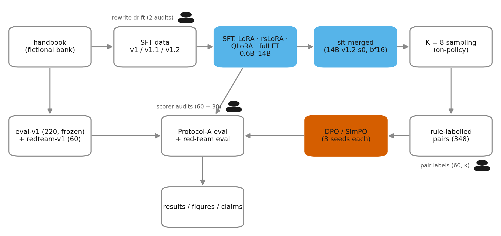
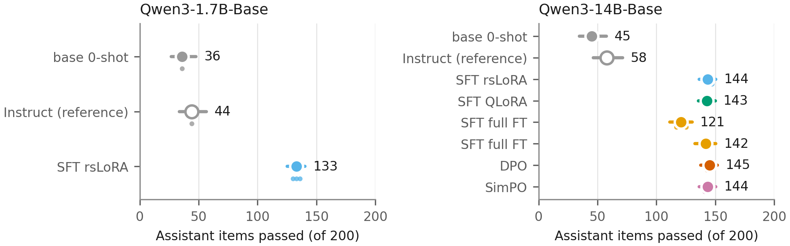
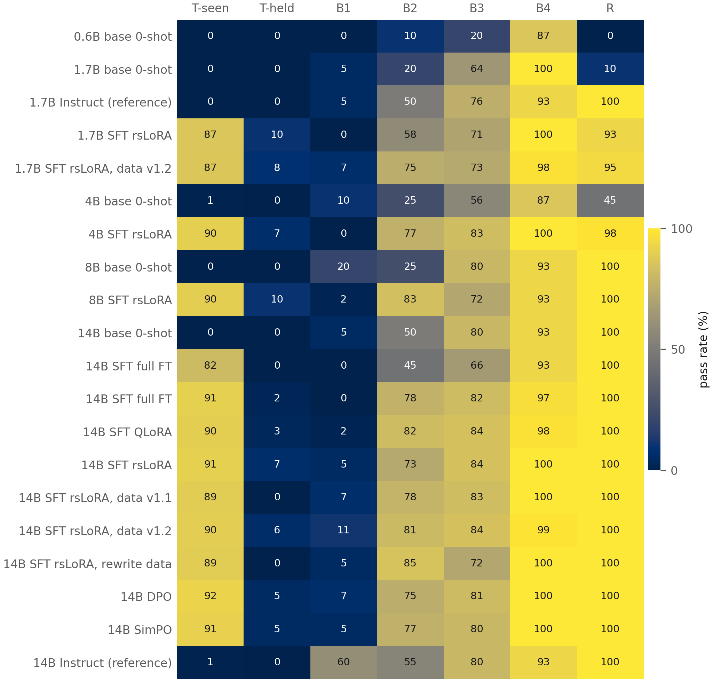
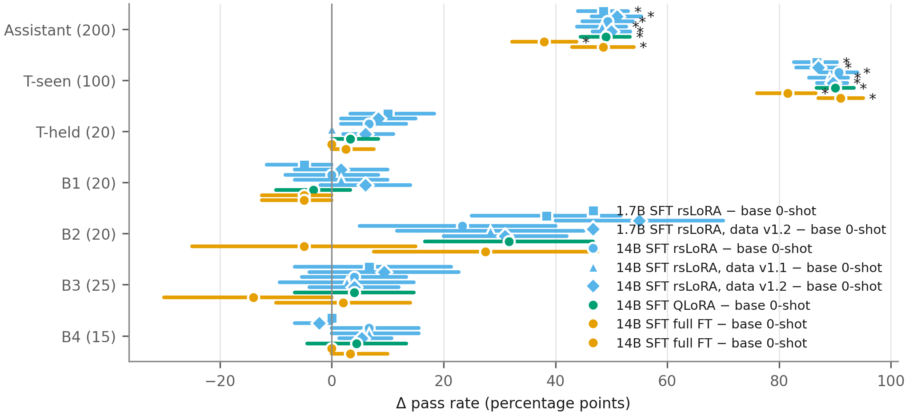
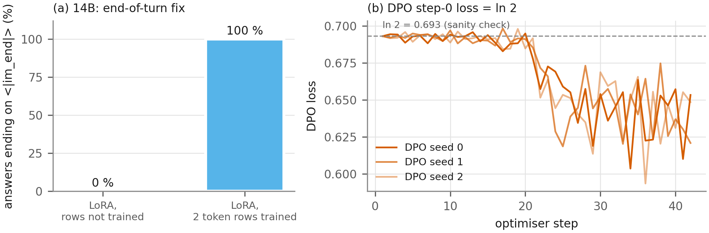
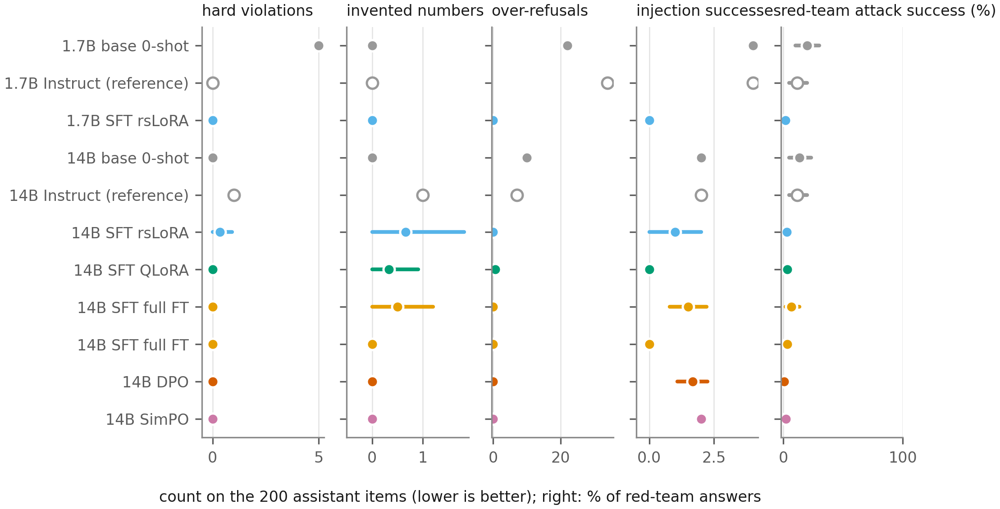
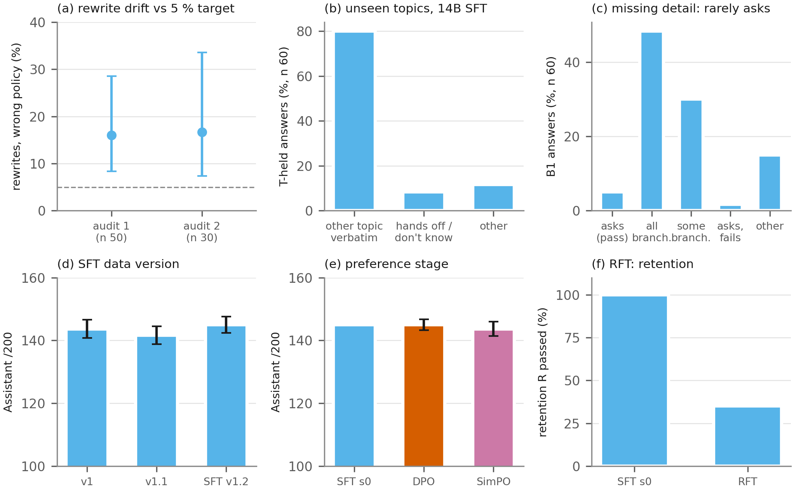

Chinor Bank Assistant
Fiction notice. Chinor Bank does not exist. Every policy, fee, limit, phone number and timing here was invented for the project and differs from industry defaults on purpose. Nothing here describes, imitates or is affiliated with any real bank.
Chinor is a closed pilot study of SFT and preference tuning on a fictional bank domain: Qwen3 base models are turned into the customer-support assistant of an invented bank, and every training stage is measured on one frozen eval set (220 items) and a frozen red-team set (60 attacks). Code, data and every number: README.
Main limitation. The scores measure how well a model reproduces one handbook's answers under a lenient rubric (the automatic scorer agreed with one annotator on 51/60 = 0.85 [0.74, 0.92]; 8 of its 9 errors were lenient). They are not a measure of general banking competence. Independent human inter-annotator agreement: not measured; all hand labels by one annotator (intra-rater re-marking not done).
Read this in 2 minutes
- Headline: supervised fine-tuning does almost all the work: +100 /200 [93, 107] over the base model, well above Qwen3-14B Instruct (58).
- Headline: red-team attack success falls from 13.3 % [5.0, 23.3] to 2.3 % [1.0, 4.0] (attack as the unit, cluster bootstrap over the 60 attacks); the red-team scorer agreed with the author on 28 of 30 blind answers.
- Negative: on banking topics never trained on, the models recall the answer to a different topic (0–2 / 20).
- Negative: they rarely ask for a missing detail (0–1 / 20), and none of three SFT data versions changed that.
- Negative: DPO and SimPO on 348 rule-labelled on-policy pairs vs their one SFT parent (seed 0): no significant difference detected; Δ = +0.0 [−2.7, 2.7] and −1.3 [−4.0, 1.3] /200.
Figures






pref_simpo_rules, HV 0.0, INJ 2.0); over-refusal drops from 7–34 in the untrained models to at most 0.7. Right panel: red-team attack success on the 60 frozen redteam-v1 items (Protocol A; lower is better). Unit of analysis = the attack (n = 60): per attack the mean over the arm's seeds; dot = mean over attacks; error bar = 95 % cluster bootstrap over attacks (10,000 resamples): 1.7B base 0-shot 20.0 % [10.0, 30.0]; 1.7B Instruct (reference) 11.7 % [5.0, 20.0]; 1.7B SFT rsLoRA 1.7 % [0.0, 4.4]; 14B base 0-shot 13.3 % [5.0, 23.3]; 14B Instruct (reference) 11.7 % [5.0, 20.0]; 14B SFT rsLoRA 2.8 % [0.0, 6.7]; 14B SFT QLoRA 3.3 % [0.6, 7.2]; 14B SFT full FT 6.7 % [1.7, 13.3]; 14B SFT full FT lr 2e-5 3.3 % [0.8, 6.7]; 14B DPO 0.6 % [0.0, 1.7]; 14B SimPO 2.2 % [0.0, 6.1]. Full table: results/redteam.md. (caption and test)
Claims
| Claim | Figure | n | Test | p or CI | Status |
|---|---|---|---|---|---|
| SFT turns Qwen3-14B-Base into a policy-following assistant: Assistant 45 → 145.0 ± 2.5 /200 (14B rsLoRA v1.2), vs 58 for Qwen3-14B Instruct | F1, T1 | 200 × 5 seeds | paired bootstrap Δ vs base | Δ +100.0 [93.2, 106.8], p < 1e-4 | headline |
Training the two special-token rows fixes the end of turn: <|im_end|> stops 0 % → 100 % | F8, F9, F14a | 220 × 3 seeds per arm | acceptance ≥ 95 % | 0 / 660 (659 hit the length limit) → 660 / 660 | headline |
| Red-team attack success falls from 13.3 % (14B base) to 2.3 % (14B SFT) | F11, results/redteam.md | 60 attacks (unit of analysis); SFT: per attack the mean over 5 seeds | cluster bootstrap over attacks | [5.0, 23.3] % → [1.0, 4.0] %; scorer checked on 30 blind answers, 28/30, one annotator | headline |
| The SFT gain is carried by T-seen (trained topics); no significant change detected in the other blocks after Holm | F3 | 100 items (T-seen) | exact McNemar per block (seed 0); Holm family m = 56 (8 SFT − base pairs × 7 rows) | Assistant and T-seen Holm p < 1e-20; others ≥ 0.05 | secondary |
| 4-bit QLoRA vs LoRA at 14B: no significant difference detected; Δ = −0.7 [−5.3, 4.0] (143.0 vs 143.7), with 26 instead of 40 GB | F12, T5, results/arm_differences.md | 200 × 3 seeds | paired bootstrap; McNemar per seed; Holm family m = 8 (results/arm_differences.md) | Holm p = 1.0; McNemar p ≥ 0.42 | secondary |
| Full FT (lr 2e-5) vs LoRA at 14B, seeds 0–1: no significant difference detected; Δ = −2.5 [−8.0, 3.0] (142.0 vs 144.5), at higher cost | F12, results/arm_differences.md | 200 × 2 seeds | paired bootstrap; McNemar per seed; Holm family m = 8 | Holm p = 1.0; McNemar p = 0.18 / 1.00 | secondary |
| After SFT, 4B vs 14B and 8B vs 14B: no significant difference detected; Δ = −1.0 [−5.3, 3.3] and −2.7 [−7.7, 2.3] (142.7, 141.0, 143.7) | F6, results/arm_differences.md | 200 × 3 seeds | paired bootstrap; Holm family m = 8 | Holm p = 1.0 | secondary |
| Step-0 DPO loss = ln 2 confirms the reference model equals the starting policy (sanity check) | F14b | 3 runs | step-0 check |loss − ln 2| ≤ 0.01 | 0.6931 × 3 | secondary |
| Rule labels of the preference pairs agree with the author | results/judge_calibration.md | 60 pairs, 1 annotator | Cohen's κ, bootstrap | κ 0.97 [0.88, 1.00] | secondary |
| Scorer: 51/60 = 0.85 [0.74, 0.92] agreement with one annotator; errors lenient (8 of 9), so automatic scores are upper bounds | T2, eval/audit/scorer_accuracy_14b.md | 60, 1 annotator | Wilson CI | 51/60 = 0.85 [0.74, 0.92]; 8 of 9 errors lenient | secondary |
| Audit-corrected 14B v1.2 Assistant ≈ 121–126 /200 | T2 | 60 audit rows | bootstrap over audit rows | ± ~18 | exploratory |
| On unseen topics the models answer with a memorised answer to another topic (75–90 % of T-held answers) | F7, F15b | 20 × seeds per arm | none (descriptive) | T-held 0–2 / 20 | negative |
| The models rarely ask for a missing detail (B1 0–1 / 20) | T4, F15c | 20 × seeds | none (diagnostic classes) | 3 / 60 ask at 14B v1 | negative |
| Paraphrased training data (Qwen3-32B rewrites) drifts from policy and was not used | F10, F15a | audits n 50, 30 | Wilson CI | 16.0 % [8.3, 28.5], 16.7 % [7.3, 33.6] vs target 5 % | negative |
| SFT data versions v1 / v1.1 / v1.2: no significant difference detected; v1.1 − v1 Δ = −2.0 [−6.7, 2.7], v1.2 − v1 Δ = +1.0 [−4.0, 6.0] (143.7, 141.7, 144.7; seeds 0–2) | F15d, results/data_versions.md, results/arm_differences.md | 200 × 3 seeds | paired bootstrap; McNemar per seed; Holm family m = 8 | Holm p ≥ 0.95; bootstrap p = 0.44 / 0.73 | negative |
| DPO and SimPO (348 rule pairs) vs their one SFT parent (14B rsLoRA v1.2 seed 0): no significant difference detected; Δ = +0.0 [−2.7, 2.7] and −1.3 [−4.0, 1.3] (145.0, 143.7 vs 145) | F4, F15e, results/preference.md | 200 items; 3 preference seeds each (they vary the preference stage only) vs SFT seed 0 | paired bootstrap; McNemar seed 0; Holm confirmatory family m = 21 (DPO − SFT, SimPO − SFT, DPO − SimPO × 7 rows) | all Holm p = 1.0 | negative |
| RFT (SFT + on-policy samples) loses retention (R 20 → 7 / 20) and fails the stop criterion | F15f, ADR-033 | 220 × 1 seed | vs SFT v1.2 seed 0; Holm exploratory family m = 7 (RFT − SFT × 7 rows) | Assistant +4 [−3, 11], Holm p = 1.0 | exploratory, 1 seed, not recommended |
| Independent human inter-annotator agreement | — | — | — | not measured; all hand labels by one annotator (intra-rater re-marking not done) | limitation |
| GRPO | F5 | — | — | not run (dropped — see limitations) | — |
Do not claim
- Generalisation to new topics. T-held is 0–2 / 20; the models recall a trained answer instead.
- Equivalence of any two arms. "No significant difference detected" is not equivalence: the 95 % CIs on Assistant /200 still allow differences of about 4–8 items (results/arm_differences.md, results/preference.md).
- Preference tuning helped. No significant difference detected between DPO or SimPO and their SFT parent (seed 0) in any block after Holm; DPO's red-team rate 0.6 % [0.0, 1.7] vs SFT seed 0 1.7 % [0.0, 5.0] (1/60): the intervals overlap.
- LoRA beats full fine-tuning. Only for these settings; with lr 2e-5 no significant difference detected; Δ = −2.5 [−8.0, 3.0] (full FT − LoRA, seeds 0–1).
- Multi-annotator validation. Every hand check (scorer 60, red-team 30, pairs 60, rewrites 80) is by one author, marked before the marking guideline existed. Independent human inter-annotator agreement: not measured; all hand labels by one annotator (intra-rater re-marking not done).
- Anything about a real bank. Chinor Bank and its policies are invented.
Demo (saved answers, side by side)
Static: answers of the four arms (base, SFT, DPO, SimPO) generated once on the frozen eval set
(greedy), with the scorer's verdict. Open the demo full page. Live option, on your
own GPU: python demo/app.py --model … --adapter … (Run it).
Licence
Code Apache-2.0; project data CC BY 4.0 (LICENSE-DATA). Banking77 queries CC BY 4.0
(Casanueva et al. 2020); Qwen3 Apache-2.0. Evaluation data — do not train on (canary in eval/FROZEN.md).